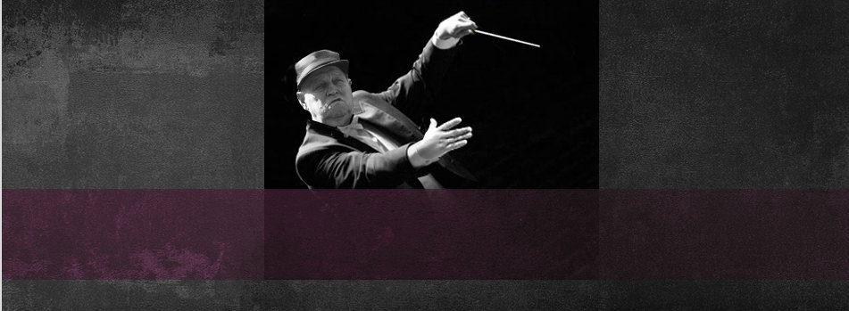

Laitoslaulajat ry on yhdistys, jonka kouluttamat laulajat kohtaavat laulujen avulla henkilökohtaisesti vanhuksia laitoksissa, palvelutaloissa ja kodeissa.
Laitoslaulajien työskentely tapahtuu aina kohdattavan henkilön ehdoilla ja yhteistyössä henkilökunnan kanssa. Iloinen muisto laulajan käynnistä kantaa pitkälle ja antaa sekä asukkaille että henkilökunnalle iloa. Kohdatulle käynti antaa rauhoittumishetken, tunteen että joku on juuri minua varten.
Kaikki laitoslaulajat ovat taustaltaan kokeneita laulajia ja heidät on koulutettu toimimaan arvostavasti ja kunnioittavasti kohdattavan omassa ympäristössä.
Tule mukaan laulukohtaamisten tielle, sinulle sopivalla tavalla!